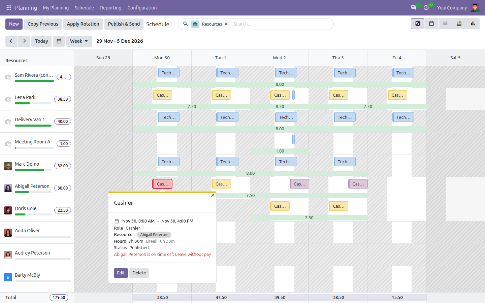
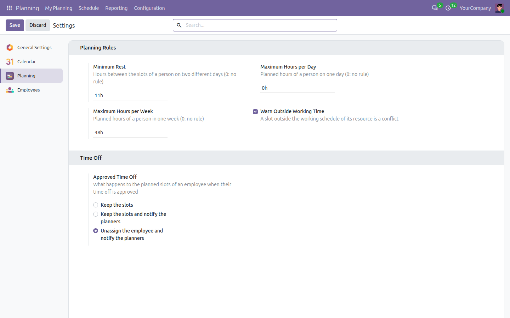

Email: odoomates@gmail.com
Approved time off blocks the employee in the planning, and the slots it overlaps are kept, flagged or freed up.
The planner sees time off before and after it is approved.
Screens from a test database with the demo data.


Your rating helps others find it; your requests and pull requests decide what comes next.
★ Rate us on Odoo Apps 💡 Request a feature 🐛 Report an issue ★ Star us on GitHub